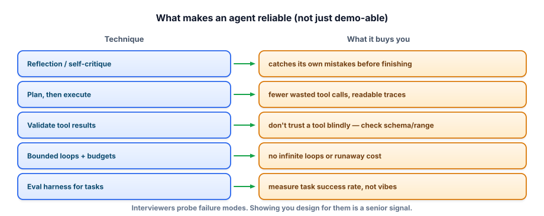

Advanced agents
Track 4 built an agent that calls tools and loops. This lesson is about making one reliable — the patterns that turn an impressive demo into something you’d trust to run unattended, and how to evaluate whether it actually works.
Why agents are hard to trust
An agent multiplies the unreliability of a single model call. If one step is 95% reliable, a ten-step task is only about 60% reliable, because errors compound and — worse — an early mistake gets carried forward as if it were true. Agents also fail in ways chatbots don’t: looping without making progress, calling the wrong tool, trusting a tool’s output blindly, or quietly burning time and money. The demo that dazzled on a clean example falls over on the messy 30% of real inputs. Advanced agent work is mostly engineering for that 30%: anticipating failure and designing so it’s caught, bounded, and recoverable.

The reliability toolkit
Reflection / self-critique. Before finalizing, have the agent check its own work against the goal (“does this answer the question? is each step justified?”). A cheap second look catches a surprising share of errors — especially format mistakes and skipped requirements.
Plan, then execute. ReAct interleaves thinking and acting, which is flexible but can wander. For complex tasks, having the agent produce a plan first, then execute the steps, yields fewer wasted tool calls and far more readable traces — and lets you validate the plan before any action runs.
Validate tool results. Never trust a tool blindly. Check the result’s shape and sanity before feeding it back (did the search return anything? is the number in a plausible range? did the API error?). Models will confidently build on garbage if you let them.
Bound the loop and the budget. Hard caps are non-negotiable in production: a maximum number of steps, a wall-clock timeout, and a token/cost budget per task. When a cap is hit, fail gracefully (return partial progress or escalate to a human) rather than spinning.
Here’s the skeleton, with the guards made explicit:
def run_agent(goal, max_steps=8, token_budget=20000):
used = 0
for step in range(max_steps): # bound the loop
action = decide_next_action(goal, history)
if action.kind == "final":
if reflect_ok(goal, action.answer): # self-critique gate
return action.answer
history.append("critique failed, revise")
continue
result = call_tool(action)
if not valid(result): # validate tool output
history.append(f"tool error: {result}, try another approach")
used += result.tokens
if used > token_budget: # bound the cost
return escalate_to_human(goal, history)
history.append(result)
return escalate_to_human(goal, history) # graceful fail, not a spinEvaluate the journey, not just the destination
The biggest mistake in agent evaluation is grading only the final answer. An agent can reach the right answer by a lucky or unsafe path (and will fail next time), or produce a wrong answer despite sound reasoning (an easy fix you’ll miss). So you evaluate the trajectory — the full sequence of thoughts, tool calls, and results — on a golden set of tasks.
Track task success rate as the headline metric, but also per-step measures: did it pick the right tool, were arguments well-formed, did it recover from errors, how many steps and tokens did it take. Tracing every step (Track 6) is what makes this possible — without traces, an agent is an unobservable black box and you’re debugging by vibes.
- Agents compound per-step error; advanced work is engineering for the messy 30% that breaks demos.
- Reflection catches errors before finishing; plan-then-execute reduces wandering and aids validation.
- Validate tool results — models build confidently on garbage. Bound steps, time, and cost, and fail gracefully.
- Evaluate the trajectory (tool choice, arg quality, recovery), not just the final answer; headline metric = task success rate.
- Tracing every step makes agents observable — you can’t debug or improve what you can’t see.
Your agent works on most tasks but on about 20% it runs for many steps, repeats the same tool call, and sometimes never finishes — occasionally producing a large bill. Diagnose the failure and list the changes you’d make.
▸ Show solution & reasoning
Diagnosis: the agent is looping without progress — repeating a tool call means it isn’t incorporating the result (or the result is unhelpful and it has no other plan), and with no hard cap the loop only ends by luck or budget exhaustion, hence the occasional huge bill. This is a classic missing-guards failure, and it concentrates on the 20% of inputs where the first approach doesn’t work.
Fixes: (1) add a step cap and a token/time budget with graceful escalation — this stops the bills immediately. (2) Detect repetition: if the same action/args repeat, force a different approach or stop. (3) Validate tool results and feed failures back explicitly (“that returned nothing — try X”), so the agent adapts instead of retrying identically. (4) Add a reflection step to notice “I’m not making progress.” (5) For complex tasks, switch to plan-then-execute so there’s a path to follow rather than improvisation. Then measure: run your trajectory eval and confirm step-count and success-rate on the hard 20% improve.
Why this is right: you treated reliability as engineering — bound the blast radius first (caps/budgets), then attack the root cause (no adaptation on failure), then re-measure on the segment that was breaking. Guards aren’t a band-aid here; in production they’re mandatory.
Why evaluate an agent’s full trajectory instead of just checking whether the final answer is correct?
Multi-agent systems are fashionable, and sometimes genuinely useful: when a task has clearly separable roles (a researcher, a coder, a critic), distinct tool/permission scopes, or benefits from an explicit critique step, splitting responsibilities can raise quality and keep each agent’s context focused. The common shape is a supervisor that decomposes a goal and routes sub-tasks to specialists, or a sequential pipeline where each stage hands off to the next. Done well, this mirrors a small team and can outperform one agent juggling everything.
But every additional agent is another thing that can misunderstand, hallucinate, or stall, and the handoffs between them are new failure surfaces where context gets lost and errors propagate. Coordination has real cost in latency, tokens, and debuggability — a five-agent system is five times the places to look when something breaks.
The honest default is to reach for multi-agent only when a single well-equipped agent with good tools, reflection, and guards has demonstrably hit a ceiling. Many “multi-agent” problems are really one agent that needed better tools or a clearer prompt. As with everything in this track, let the eval decide: if adding an agent doesn’t move task success rate on your golden set, it’s just added complexity and cost.
You can build agents that are bounded, observable, and measured. The thread running through both RAG and agents is evaluation — so let’s deepen that next: advanced evals.